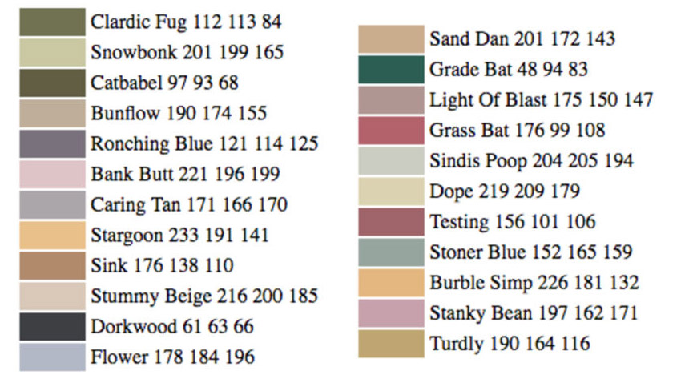
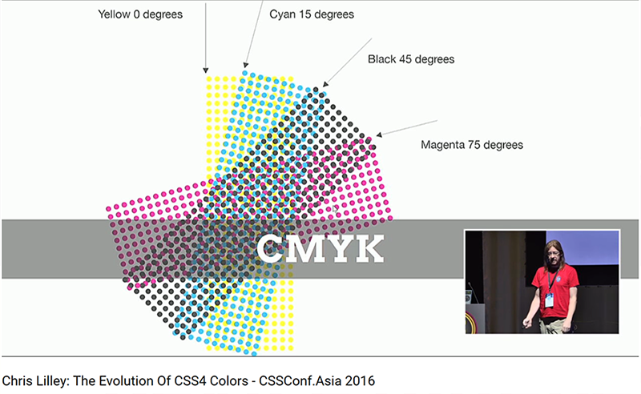
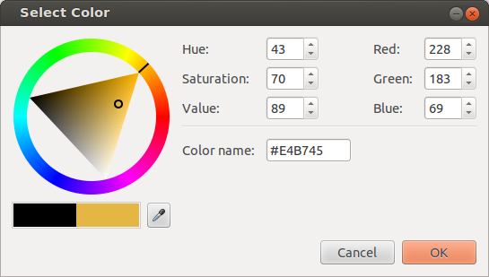
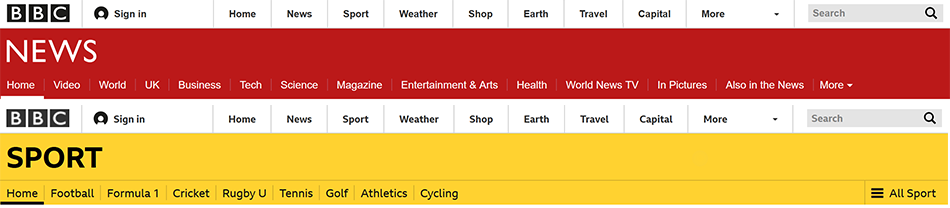
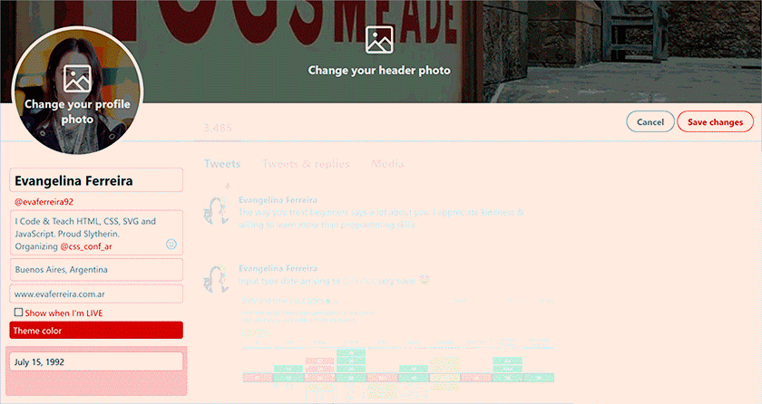
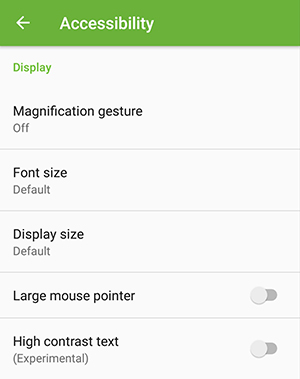
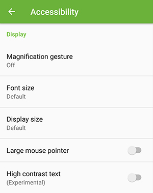

María Evangelina Ferreira Kuzminski
- UI Developer at Aerolab
- CSSConf Argentina Team
- Likes design but it's a terrible designer
When I was 14...
Turbo Pascal
Turbo Pascal for a 14 yrs old
- Useless
- Old
- Boring
It made me hate programming
Blogging
& attending Computer Clubhouse (NGO)
Puerta 18
- 3D Graphics
- Traditional Animation
- Lego Mindstorms
- Scratch
- Adobe Flash
- HTML and PHP websites
Code Interfaces
Eureka!
Color is code.
Color on the web
A long time ago, HTML was created
Tim
The folk lived happy for a while

<Font> Tag
Håkon
Bert
CSS saved the day
Color in CSS
Past, present & future
Color schemes
- Intuitive
- Variety
- Easy to modify
CSS 1 (1996)
- Color with names (16 available)
- RGB in Hexadecimal
- RGB in Decimal
Color with names
Windows VGA Palette
Aqua, black, blue, fuchsia, gray, green, lime, maroon, navy, olive, purple, red, silver, teal, white, and yellow
RGB
- Hexadecimal: #FF0000
- Decimal: rgb(255, 0, 0)
- Decimal with %: rgb(100%, 0%, 0%)
CSS 2

And... That was it.
CSS 3 (2001)
- Orange is dead
- Long live orange
- + 147 X11 colors
Some of it was great
Some X11 color names
- Orange
- Brown
- Chocolate
- Beige
- Violet
- Gray
- Grey
Some of it was nonsense
WTF, chocolate?!
Aqua === Cyan
Gray is darker than darkGray
ghostWhite is not scary :/
Who is Sandy Brown?!
Peru is country!!

Tan? Really?!
Lack of consistency
Lack of consistency
- navajoWhite is not white
- maroon looks reddish
- lightBlue, Blue, mediumBlue and darkBlue
- But only red and darkRed
- ¯\_(ツ)_/¯
The one I'm really angry about
- There's skyBlue
- But no hellRed
AI generated names
If they are so bad, why are they still here?
“ They’re not efficient, or super intuitive, but there is something downright charming about using these great names. ” - Stranger on the Internet
Alex Sexton - CSSConf US 2014
Color with names
- Not Specific
- Fun to use (:
What else is there?
Hexadecimal
From 0 to 9 & A to F
Hex values
- 3 digits #RGB
- 6 digits #RRGGBB
Hex with alpha
- 4 digits #RGBA (Beware!!)
- 8 digits #RRGGBBAA

They also have funny names!
#C0FFEE
#C0BFEFEE ?
#CA7
#BADA55
#F1E57A
How does Fiesta look like? (#F1E57A)
- Greenish
- Yellowish
- Redish
#F1E57A
Hexadecimal
- Specific
- Hard to remember
- Hard to modify
Decimal RGB
Decimal RGB/A
- Specific
- Hard to remember
- Hard to modify
- Alpha works everywhere
HSL
HSL/A
- Hue ('color')
- Saturation
- Lightness

HSL/A
- Specific
- Kinda intuitive
- Alpha works everywhere
- Hard to remember
- Easy to modify
- Ideal for transitions & animations
That's all for CSS Color Level 3!
To the future!
CSS Color Level 4
Optional commas
Optional commas
.el{
color: rgb(255 0 0 / 20%);
}
Hey!
Can we use this?!
CSS Color Level 4
- lab
- lch
- color
- hwb
- gray
- color-mod
WAIT!
Why so many?
Why not?

Current naming schemes are...
Not enough to cover our needs.
CSS Color Level 4
- More intuitive systems
- Device-independent colors
- Theming
- Customization
- Accessibility
Device-independent colors
CSS Color Level 4
- More intuitive systems
Device-independent colors- Theming
- Customization
- Accessibility
CSS Color Level 4
lab, lch, color- hwb
- gray
- color-mod
HWB()
HWB/A
- Hue (0-360)
- Whiteness (0-100%)
- Blackness (0-100%)
HWB/A
.el{
color: hwb(270 60 0);
}
More intuitive
HWB/A
White + Black = 100%
Achromatic color/shade of gray, without any hue.
Gray() function
Not grey()
Gray/A
.el{
color: gray(50, 0.9);
}
Grays in our websites
- $graySuperLight
- $grayLight
- $grayKindOfLight
- $gray
- $grayAlmost
- $grayDarker
- $graySuperDarker
This cannot be solved with gray()
Define grays with your team
Dear Designers:
Developers are your friends.
Dear Developers:
Designers are your friends.
Color-Mod()
Beware!
Color Modifications to a base color
- hue
- saturation
- lightness
- whiteness
- blackness
MOAR Color Modifications
- tint
- shade
- blend
- contrast
CSS Custom Properties
color-mod()
.el{
color: color-mod(var(--baseColor) s(-10%) w(30%));
}
color-mod()
.el{
color: color-mod(0deg tint(10%));
}
color-mod()
.el{
/* 0% Minimum contrast required by WCAG 2.0 Guidelines */
color: color-mod(purple contrast(30%));
}
.el{
/* Maximum contrast required by WCAG 2.0 Guidelines
Black or White
*/
color: color-mod(purple contrast(100%));
}
Awesome!
Can we use this?
No.
Not even with PostCSS
What can we do about these?
- Theming
- Customization
- Accessibility
Current tools
Theming & Customization
HSL, filters and custom properties
Accessibility
JavaScript & a little Math
Theming
Controlled environment
Customization
Uncontrolled environment
Theming
 Original pen by Ana Tudor
Original pen by Ana Tudor
<body style="--hue: 35">
...
</body>
body{
--bgHue: hsl(var(--hue), 80%, 40%);
--darken: hsl(var(--hue), 90%, 20%);
--lighten: hsl(var(--hue), 90%, 80%);
background-color: var(--bgHue);
}
.menu-list_link{
color: #fff;
background-color: var(--darken);
}
Color images
.content-img::after{
content: "";
background-color: var(--bgHue);
opacity: 0.3;
...
}
.content-img{
/* Not available in Firefox */
filter: hue-rotate(calc(var(--hue) * 1deg));
}
Get the inverted color
/* Not available in Firefox */
--bgInvert: hsl(calc(var(--hue) + 180), 70%, 60%);
HSL + Custom Properties
- Work great for theming
- You can assure AAA contrast
- Not enough customization
- Bug present in Firefox
What if it isn't just the hue?
What if the brightness is unknown?
Customization
Customization can turn inaccessible
Accessibility
Background-color & text color
Is CSS enough?
We need JavaScript
And black or white text*
*Or vice versa.
Find brightness value
Apply .dark or .light accordingly
Search the brightness value
brightness = (color.r * 299 + color.g * 587 + color.b * 114 ) / 1000
Find the brightness
rgb(40, 230, 30)
(40*299 + 230*587 + 30*144) / 1000 = 151.29
Apply class accordingly
if(brightness > 128){
// Apply #000 text color
el.classList.add("light-background");
} else {
// Apply #FFF text color
el.classList.add("dark-background");
}
Sometimes the system fails
rgb(71, 170, 22) (Green)
(71*299 + 170*587 + 22*144) / 1000 = 124.18


Brightness value + Color difference
Turn into HSL and modify Lightness
Between values 115 and 135
Turn into HSL and modify Lightness
if (brightness >= 115 && brightness <= 135){
// Turn lightness down a 20%
el.style.backgroundColor = getHslDarken( originalBackgroundStyle );
// Apply #FFF text color
el.classList.add("dark-background");
} else if (brightness < 115) {
// Apply #FFF text color
el.classList.add("dark-background");
} else if (brightness > 135) {
// Apply #000 text color
el.classList.add("light-background");
}
Turn into HSL and modify Lightness
// Turn lightness down a 20%
lightness = Math.floor(l * 100 - 20);
// Apply color
result = "hsl(" + hue + ", " + saturation + "%, " + lightness + "%)";
return result;
Color formats convertors
What if everything is customizable?
Text color & background-color
Just Don't
Last remarks
1. Media Queries
OS options => Media Queries
 

Media Queries - Level 5
- Inverted colors
- Reduced motion
- Reduced transparency
2. Do NOT trust color